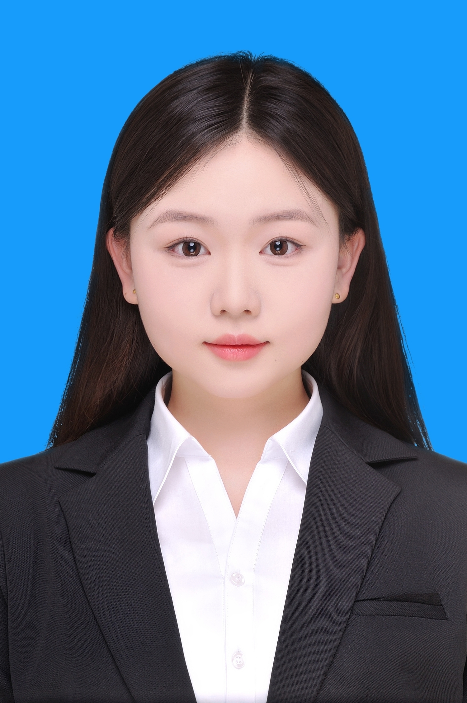

左嘉欣
左嘉欣，女，中共党员，新疆大学2024级语言学及应用语言学博士研究生（硕博连读），研究方向：中国少数民族语言（维吾尔语）、阿尔泰语系语言、少数民族语言自然语言处理。
教育背景
- 新疆大学 - 中国少数民族语言文学（维吾尔语） - 2018-2022年，本科
- 新疆大学 - 中国语言文学（维吾尔语） - 2022-2024年，硕士
- 新疆大学 - 语言学及应用语言学 - 2024级，博士研究生（硕博连读）
实习经历
- 20209月-2021年9月：喀什地区叶城县巴仁乡库勒艾日克村参与驻村工作，使用维吾尔语参与入户走访、疫情防控等工作；
- 2023年9月-2024年6月：喀什地区叶城县第六中学担任高二（9）班、高二（10）班英语老师
参与科研项目
- 数智时代自治区研究生精品示范课程《维吾尔语高级听力》知识图谱的构建与应用研究（XJDX2025YJG18）
- 认知语言学视域下唐诗的维译研究（2024ZHSGYJY-YBO4）
- 新文科背景下自治区级一流本科课程知识图谱的构建与应用研究（XWKJG202415）
- 以提升语言交际能力为核心的“民汉双翻人才”培养模式改革与实践探索(XJU-2021JG06)
- 建设中华民族共有精神家园研究 (2022-GMH-012)
发表论文
获奖情况
- 2021年6月：叶城县巴仁乡库勒艾日克村2020-2021学年驻村实习“优秀实习生”
- 2021年12月20日：2020至2021学年新疆维吾尔自治区教育厅国家励志奖学金
- 2022年6月2日：中国语言文学学院维吾尔语专业口语技能竞赛“火箭组”三等奖
- 2022年12月1日：新疆大学2022至2023学年研究生自治区学业奖学金
- 2023年10月6日：新疆维吾尔自治区教育厅2023至2024学年自治区奖学金
- 2024年6月24日：叶城县第六中学“优秀实习教师”
- 2024年11月6日：新疆大学2024至2025学年研究生自治区学业奖学金
- 2024年11月27日：获评“博士生党支部学习标兵”